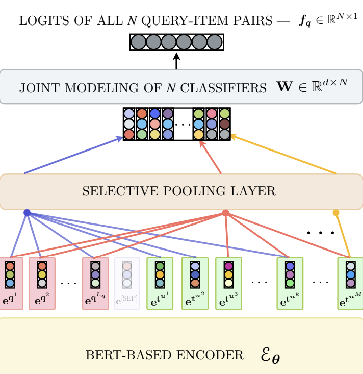
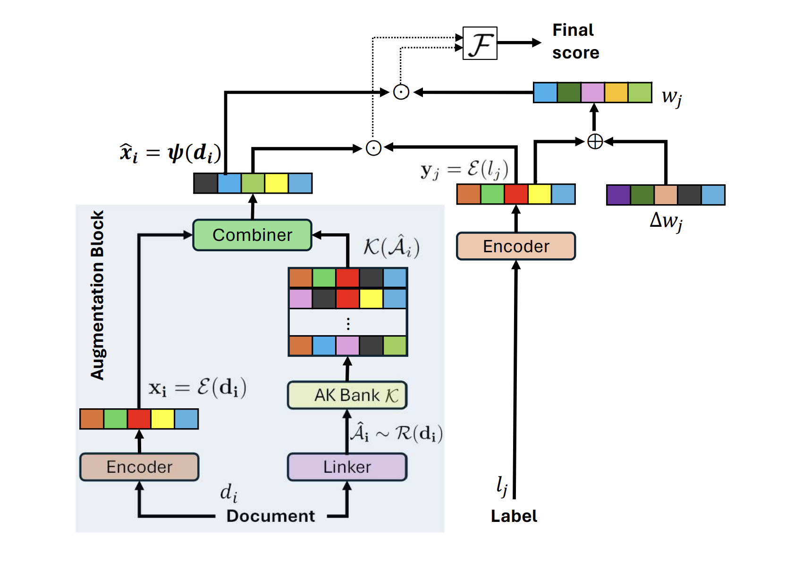
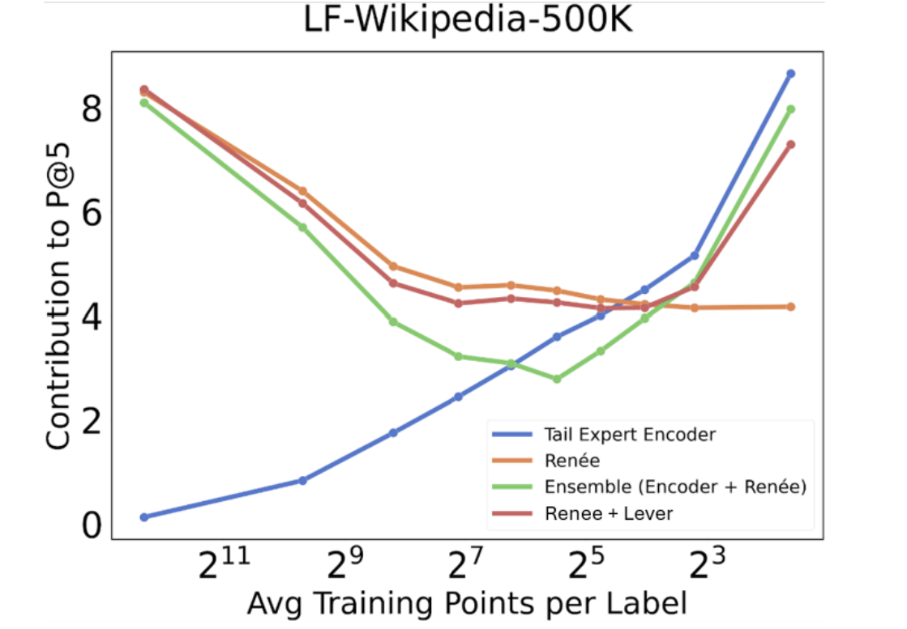
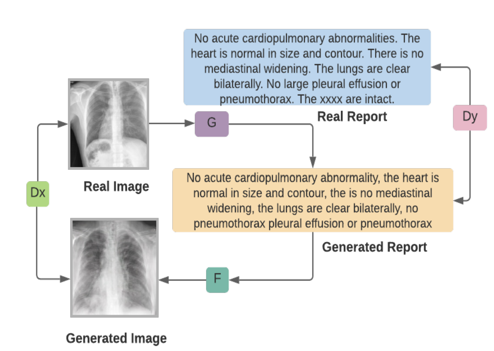

Hi! I am Bhawna, a PhD student at UC Berkeley advised by Jitendra Malik. Previously, I was a Research Engineer at Microsoft Research working with Manik Varma. I completed my undergraduate studies majoring in Computer Science at the Indian Institute of Technology (IIT), Ropar.



